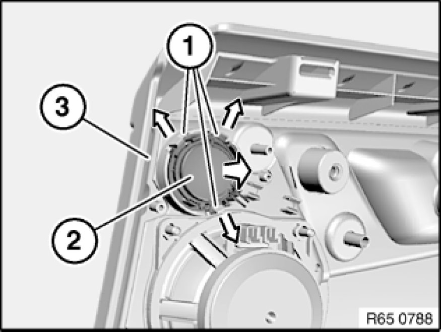

Removing and Installing/Replacing Speaker (Tweeter in Rear Door)
65 13 080 - Removing and installing/replacing speaker (tweeter in rear door)

Necessary preliminary tasks:
- Remove rear door trim Removing and Installing Left or Right Rear Door Trim Panel

Unlock catches (1) in direction of arrow and remove tweeter (2) from rear door trim panel (3).